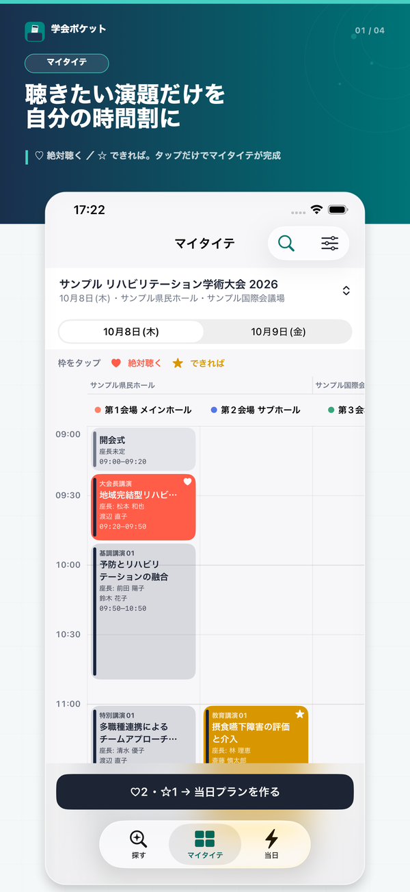
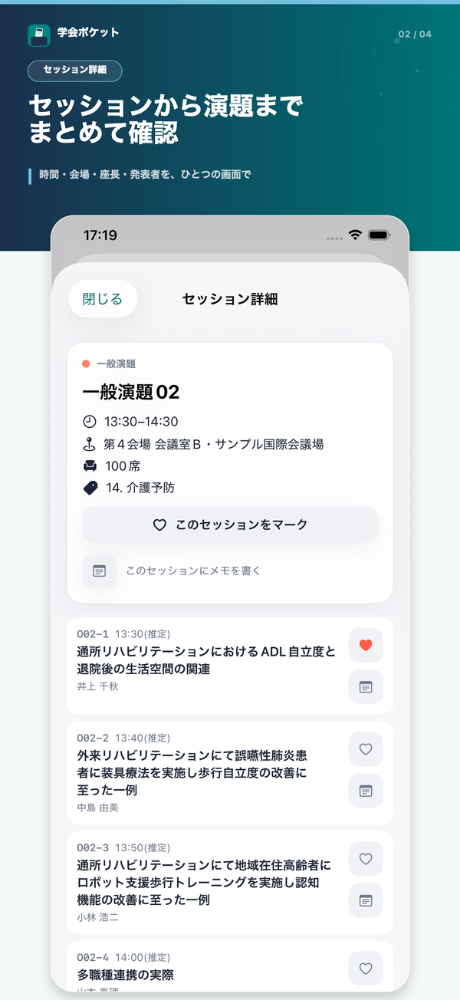
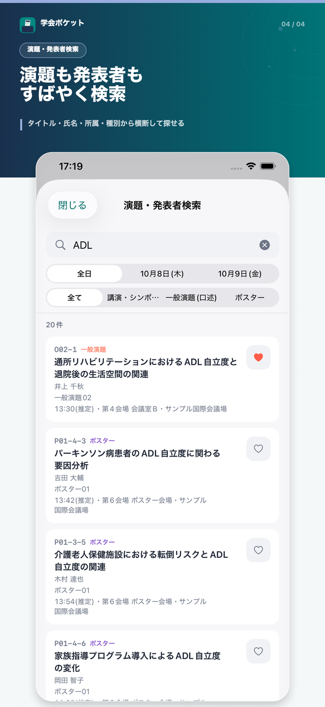

学会・研究大会向け 非公式プログラムアプリ
学会ポケット
聴きたい演題だけを、自分のタイテに。
学会・研究大会のプログラムから聴きたい演題を選んで、自分だけのタイムテーブルをつくるアプリ。演題メモや当日ビューまで、学会参加の当日をスムーズにします。
iPhone向けに無料で公開中です。
インストール不要。iPhone以外のスマートフォンやパソコンからも、いますぐご覧いただけます。
非公式アプリについて 本アプリは、掲載する学会・大会の主催者・運営とは関係のない非公式アプリです。参加者が公式サイトで公開されているプログラム情報をもとに、学会ポケット運営事務局が制作しています。掲載内容は公式発表により変更となる場合がありますので、最新・正確な情報は必ず大会の公式サイトでご確認ください。
アプリの中身



できること
-
演題・発表者の横断検索
演題タイトルや発表者名から、収録している全大会・全セッションを横断してすばやく検索できます。
-
2段階マークでマイタイテ作成
「絶対聴く」「できれば」の2段階でマークするだけ。会場×時間のタイムテーブル上にまとまり、聴きたい演題が時間で被っていないかもすぐ分かります。
-
当日ビューとウィジェット
会場では「今」と「次」の演題だけを表示。ホーム画面ウィジェットでロック解除せずに確認できます。
-
オフライン対応
一度開いた大会のプログラムは端末に保存。会場の電波が弱くても、マイタイテと演題情報を確認できます。
-
演題メモ
気になった演題に自分だけのメモを残せます。質問したいことや感想をその場で書き留められます。
-
広告なし・アカウント不要
ダウンロードしてすぐ使えます。会員登録やログインは不要、広告表示もありません。
Web版もあります
アプリを入れなくても、ブラウザでそのままタイムテーブルを見られます。演題の検索、聴きたい演題のマーク、メモ、当日ビューまで、主な機能はWeb版でもお使いいただけます。マークとメモはお使いのブラウザに保存され、一度開いた大会はオフラインでも表示できます。
iPhoneをお使いの方は、当日をより快適に過ごせるアプリ版がおすすめです。ホーム画面ウィジェットなど、アプリ版だけの機能もあります。
Web版をブラウザで開くこのアプリについて
扱う情報の範囲、出典、掲載情報の修正・削除依頼について。
プライバシーポリシー
取り扱う情報、保存場所、外部送信、削除方法について。
利用規約
アプリの利用条件、禁止事項、責任範囲について。